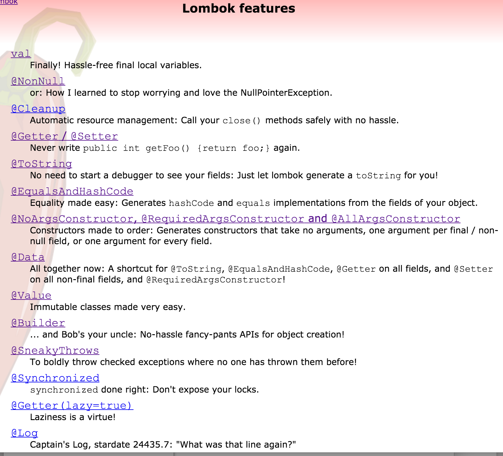
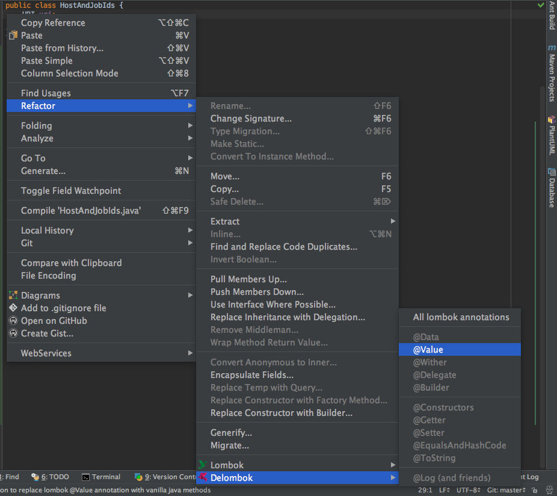

2016-07 Cool Stuff
Some of the interesting things I’ve been playing with lately
Created by Jim Moore

2016-07 Cool Stuff by Jim J. Moore is licensed under a Creative Commons Attribution 4.0 International License.
Presentation source at https://github.com/jdigger/201607-cool-stuff-preso
Agenda
- Capsule
- Lombok
- JDK 8
- Streams & Lambdas
- Where’s Elvis?
?: - Misc
- Softened Throws
- Either
- Checker Framework
- Reactive Streams
- AsciiDoclet
- Typed Builders
- Static Analysis
Examples
To see these used “for reals”, please refer to the Grabbit CLI
Capsule
plugins {
id "us.kirchmeier.capsule" version "1.0.2"
}
task fatCapsule(type: FatCapsule) {
archiveName = "grabbit-cli-${version}"
applicationClass "com.twcable.grabbit.tools.cli.GrabbitCli"
capsuleManifest {
minJavaVersion = defaults.compatibilityVersion
}
manifest = jar.manifest
reallyExecutable
}
assemble.dependsOn fatCapsuleCapsule MANIFEST.MF
$ unzip -p build/libs/grabbit-cli-2.0.1 META-INF/MANIFEST.MF
warning [build/libs/grabbit-cli-2.0.1]: 34 extra bytes at
beginning or within zipfile
(attempting to process anyway)
Manifest-Version: 1.0
Application-Class: com.twcable.grabbit.tools.cli.GrabbitCli
Min-Java-Version: 1.8
Premain-Class: Capsule
Main-Class: CapsuleFirst 34 Bytes
$ head -c34 build/libs/grabbit-cli-2.0.1
#!/bin/sh
exec java -jar $0 "$@"$ unzip -l build/libs/grabbit-cli-2.0.1
Length Date Time Name
-------- ---- ---- ----
0 07-08-16 09:26 META-INF/
402 07-08-16 09:26 META-INF/MANIFEST.MF
166083 10-07-15 15:12 Capsule.class
73693 07-08-16 09:26 grabbit-cli-2.0.1.jar
52988 05-29-16 18:44 commons-cli-1.3.1.jar
273599 05-30-16 06:26 snakeyaml-1.17.jar
2042 09-27-15 20:42 reactive-streams-1.0.0.jar
995032 06-28-16 12:25 reactor-core-2.5.0.M4.jar
-------- -------
1563839 8 filesLombok

@Value
@Value
public class HostAndJobIds {
URI uri;
Publisher<Long> jobIds;
}public class HostAndJobIds {
URI uri;
Publisher<Long> jobIds;
@java.beans.ConstructorProperties({"uri", "jobIds"})
public HostAndJobIds(URI uri, Publisher<Long> jobIds) {
this.uri = uri;
this.jobIds = jobIds;
}
public URI uri() {
return this.uri;
}
public Publisher<Long> jobIds() {
return this.jobIds;
}
public boolean equals(Object o) {
if (o == this) return true;
if (!(o instanceof HostAndJobIds)) return false;
final HostAndJobIds other = (HostAndJobIds)o;
final Object this$uri = this.uri;
final Object other$uri = other.uri;
if (this$uri == null ? other$uri != null :
!this$uri.equals(other$uri)) return false;
final Object this$jobIds = this.jobIds;
final Object other$jobIds = other.jobIds;
if (this$jobIds == null ? other$jobIds != null :
!this$jobIds.equals(other$jobIds)) return false;
return true;
}
public int hashCode() {
final int PRIME = 59;
int result = 1;
final Object $uri = this.uri;
result = result * PRIME + ($uri == null ? 0 : $uri.hashCode());
final Object $jobIds = this.jobIds;
result = result * PRIME + ($jobIds == null ? 0 : $jobIds.hashCode());
return result;
}
public String toString() {
return "com.twcable.grabbit.tools.jobstarter.HostAndJobIds(uri=" +
this.uri + ", jobIds=" + this.jobIds + ")";
}
}
Lombok val
public static JobStatus fromJson(URI uri, @Nullable String jsonStr) {
val json = (jsonStr == null || jsonStr.trim().isEmpty()) ? "{}" : jsonStr;
val map = (Map<String, Object>)new Yaml().loadAs(json, Map.class);
val transactionId = (Long)map.getOrDefault("transactionID", -1L);
val jobExecutionId = (Long)map.getOrDefault("jobExecutionId", -1L);
val startTimeStr = (String)map.getOrDefault("startTime", DATE_TIME_FORMATTER.format(now()));
val startTime = OffsetDateTime.parse(startTimeStr, DATE_TIME_FORMATTER);
val endTimeStr = (String)map.get("endTime");
val endTime = (endTimeStr != null) ?
OffsetDateTime.parse(endTimeStr, DATE_TIME_FORMATTER) : (OffsetDateTime)null;
val path = (String)map.getOrDefault("path", "/MISSING_PATH");
val existStatusMap = (Map<String, Object>)map.getOrDefault("exitStatus", emptyMap());
val exitDescription = (String)existStatusMap.getOrDefault("exitDescription", "");
val exitCode = (String)existStatusMap.getOrDefault("exitCode", "UNKNOWN");
val running = (Boolean)existStatusMap.getOrDefault("running", Boolean.FALSE);
val timeTaken = Long.valueOf(map.getOrDefault("timeTaken", -1L).toString());
val jcrNodesWritten = Long.parseLong(map.getOrDefault("jcrNodesWritten", -1L).toString());
return new JobStatus(uri, transactionId, jobExecutionId, startTime, endTime, path, timeTaken,
jcrNodesWritten, exitDescription, exitCode, running);
}val “gotchas”
- Relies on type-inference from the right-side, whereas other parts of modern
Java type-inference take it from the left
Map<String, File> cache = new HashMap<>();Function<String, File> cacheFun = cache::get;
valcurrently does not work inside lambdas, so you need to extract the code out to a method- Arguably, if the code is complicated enough (i.e., more than a single expression) to need an intermediate variable, it should be extracted into a method anyway
JDK 8
Streams & Lambdas
Some Things To Realize About Streams
- They are single-use only, like
Iterator - They’re monads, so all the really, really useful characteristics of monads apply from functional programming
First a REALLY Simple Look at Monads
Monads, Functors, etc. are fancy ways of saying “a value that is expressed as a function.”
A monad, specifically, needs map(i → o) and flatMap(i → M{o}) functions.
public interface Stream<T> {
<R> Stream<R> map(Function<T, R> mapper);
<R> Stream<R> flatMap(Function<T, Stream<R>> mapper);
}Monad Use
What that means is that you can transform that value in extremely flexible/powerful ways regardless of such things as:
- it contains a single value or a many
- the value exists at all (e.g.,
Optional.empty()) - the value doesn’t exist yet (e.g., asynchronous)
- the complete value doesn’t fit into process space
- it’s infinite
- different modes of computation (e.g., serial or concurrent)
- etc.
Monad “Extractions”
- A pure monad doesn’t expose its innards, like the Schrödinger’s cat box.
- As long as it’s pure, it can retain all those properties.
- When you “extract” from the monad (reach into the box) is when the computation machinery kicks in.
Monad Reading
There’s a LOT of stuff explaining monads, monoids, functors, endofunctions, etc. Just Google it.
The best I’ve found for explaining it in Java code instead of mathematics notation is Functor and monad examples in plain Java
Streams as Monads
- Try to keep Streams “pure” as much as possible.
- There’s effectively zero cost to them (computational, memory, etc.) until you do a “terminal” operation that destroys that purity.
- At times it seems like
Streamdoesn’t want you to have it as aCollectionor the like, making you have to jump through some hoops. That’s not by accident…
Extracting from Streams - findAny and collect
public @Nullable HostJobState put(HostJobState entry) {
val existing = entries().stream().
filter(e -> match(e, entry)).
findAny().orElse(null);
if (existing == null || !existing.state().equals(entry.state())) {
if (existing == null) { // new entry
this.hostJobStates = new ArrayList<>(entries());
hostJobStates.add(entry);
}
else { // modified entry
hostJobStates = entries().stream().
map(e -> match(e, entry) ? entry : e).
collect(Collectors.toList());
}
}
return existing;
}Extracting from Streams - forEach and method handles
private void parseStartJobsOutput(String startJobsOutput,
Subscriber<Long> jobIdSub) {
// the output from starting a job looks like "[123,125]"
val matcher = JOB_IDS_PATTERN.matcher(startJobsOutput);
if (matcher.matches()) {
val jobIdsStr = (@NonNull String)matcher.group("jobIds");
Arrays.stream(jobIdsStr.split(",")).
map(String::trim).
map(Long::valueOf).
forEach(jobId -> jobIdSub.onNext(jobId));
jobIdSub.onComplete();
}
else {
jobIdSub.onError(new IllegalStateException("Could not parse job " +
"ids from: " + startJobsOutput));
}
}Venkat Talks Lambdas
Useful Stream Creation Classes
java.util.Collection
default Stream<E> stream() {
return StreamSupport.stream(spliterator(), false);
}
default Stream<E> parallelStream() {
return StreamSupport.stream(spliterator(), true);
}- Everything that implements
Collectionautomatically hasStreamsupport. - A
Spliteratoris anIteratorthat can be decomposed (useful for parallel iteration).
java.util.stream.StreamSupport
A set of factory methods that take take a Spliterator (of different types,
including for primitives) to create a Stream.
java.util.Arrays
Has .spliterator(..) and .stream(..) factory methods to wrap arrays.
java.util.stream.Collectors
A set of functions for
- collecting the values emitted by a Stream into collections like
List,Set,Map, andString - doing common aggregations, like counts, sums, min, max, average, “reducing”, grouping, etc.
Where’s Elvis?
java.util.Optional
val existing = entries().stream().
filter(e -> match(e, entry)).
findAny().orElse(null);Still Not Quite Groovy’s Elvis…
public String getIssuesUrl() {
return issuesUrl ?: "${siteUrl}/issues"
}public String getIssuesUrl() {
return (issuesUrl != null && !issuesUrl.isEmpty()) ?
issues : "${siteUrl}/issues"
}Try Again
/**
* Convert the String into an Optional that only has value if the
* input was both non-null and non-empty.
*/
public static Optional<String> opt(String val) {
return Optional.ofNullable(val).filter(s -> !s.isEmpty());
}
public String getIssuesUrl() {
return opt(issuesUrl).orElseGet(() -> getSiteUrl() + "/issues");
}
public String getBintrayPkg() {
return opt(bintrayPkg).orElse(project.getName());
}Optional vs Groovy’s ?: and ?.
Groovy’s elvis and null-safe-dereference operators are a very succinct way of handling a very common situation in Java. But they are very specialized.
Because Optional is
a monad (though not
entirely pure) there is much, much more that you can do with it.
Optional is great if you treat it as a monad instead of simply a
null-wrapper (i.e., you should almost never call .isPresent() and .get()).
Misc JDK8
- Default interface methods allowed adding a lot of extremely useful functions
to the standard JDK classes without breaking everyone
- e.g.,
Collection.stream()
- e.g.,
java.util.Mapadded a lot of great methods, such asgetOrDefault(..),putIfAbsent(..),computeIfPresent(..), etc.- The new DateTime API
is really, really nice.
- May
java.util.Date/Calendarbe damned for all eternity.
- May
- Type Annotations allow you to put annotations on types anywhere a type declaration can appear, including local variables and type casts
Softened Throws
The Problem With Checked Exceptions
Often we don’t want to expose underlying checked exceptions in our APIs, or it’s not our API to change (e.g., the Stream API).
(We’ll look later at an easy way of returning errors that aren’t “exceptional.”)
Ignoring the Exception for Now…
Assuming there isn’t anything reasonable to do with the exception at that point in the code, that means we end up either swallowing or wrapping the exception.
(Of course many JVM languages simply ignore the checked nature of exceptions, but I’m focussing on the Java Language.)
Wrapping Exceptions
try {
// ...
}
catch (IOException e) {
throw new RuntimeException(e);
}The exception that gets thrown is, well, wrong.
To get to the actual exception you have to call .getCause().
What would be great is if we can be unchecked and unwrapped…
Generics type erasure to the rescue!
Softened Exception
/**
* Remove checked-ness from the exception. The same exception is returned
* (checked or unchecked), but this removes the compiler's checks.
*/
public static <T extends Throwable> RuntimeException softened(T exp) {
return Utils.<RuntimeException>uncheck(exp);
}
private static <T extends Throwable> T uncheck(Throwable throwable) throws T {
throw (T)throwable;
}protected void writeFile() {
Writer fileWriter = null;
try {
// ...
}
catch (IOException e) {
throw softened(e);
}
finally {
Utils.flushAndClose(fileWriter);
}
}Checker Framework
http://types.cs.washington.edu/checker-framework/current/checker-framework-manual.html
Nullness Checker
It hooks into javac and makes it extremely difficult to get an NPE.
There’s no runtime component/impact, besides safer code.
@NonNull
By default every parameter, field, variable, return value, etc. is effectively
marked as @NonNull
Doing anything that may potentially cause the reference to be null (including
not explicitly initializing it) causes a compile-time error
@Nullable
If you mark a reference as being @Nullable then it will be a compile-time
error to dereference it unless a prior nullness check (e.g.,
if (myVar != null) ) guarantees that the execution branch can not be
null.
Much Safer Code
I’m pretty good about making sure I don’t get an NPE, but this has saved me a few times.
Also, because it does the flow-analysis, it highlights execution branches you might not have thought of.
Better Use of the Type System
It’s very much like static typing (which is what it’s leveraging).
Sometimes it’s useful to be “loosely typed” (or not explicitly nullness checked), but most of the time it’s much better to let the computer be anal-retentive.
It’s Not Free
Of course the more the compiler has to do, the longer the compiler takes.
In general it’s an easy call that spending a little more time compiling is worth it to get the additional safety and “correctness” checking.
Tutorial
See https://github.com/glts/safer-spring-petclinic/wiki/Our-mission
(a wizard-y wiki walking through the classic PetClinic sample)
for a good walk-through
Either<L, R>
There are times when you need to be able to return one of two types that have no reasonable common ancestor (i.e., they are “disjoint” types).
What that often means is returning Object and then a series of instanceof calls.
/**
* An either/or (XOR) value represented as Left/Right.
*
* By convention, Left is an error value whereas Right is a success value.
*/
public interface Either<L, R> extends Supplier<R> {
boolean isLeft();
L getLeft();
boolean isRight();
R get();
static <L, R> Left<L, R> left(L value) {
return new Left<>(value);
}
static <L, R> Right<L, R> right(R value) {
return new Right<>(value);
}
// ...
}Example Either Return
final class CliOptions {
/**
* Parse the arguments.
*
* @param args the command line arguments
* @return Right if successfully parsed; otherwise Left with
* the error message/help
*/
public static Either<String, CliOptions> create(String[] args) {
// ...
}
}public static void main(String[] args) {
val cliOptions = CliOptions.create(args);
if (cliOptions.isRight()) {
run(cliOptions.get());
System.exit(0);
}
else {
System.err.println(cliOptions.getLeft());
System.exit(1);
}
}Grabbit CLI uses a much simplified version of Either based
on the work in Javaslang, a really awesome library
that helps with Scala-envy.
(Didn’t want to include Javaslang in the fat-jar for that single class.)
Reactive Streams
The Basics
Similar to java.util.Stream juiced WAAAAAAAAY up.
Three core simple interfaces that enable the capabilities of
Will be a core part of JDK 9 as java.util.concurrent.Flow.*
The Interfaces
- Publisher<T> - A
Publisheris a provider of a potentially unbounded number of sequenced elements, publishing them according to the demand received from itsSubscriber(s). - Subscriber<T> - Receives callbacks when a
Subscriptionis created, data is ready from thePublisher, data is complete, or there is an error. - Subscription - A
Subscriptionrepresents a one-to-one lifecycle of aSubscribersubscribing to aPublisher.
With a forth “combo” interface:
- Processor<T,R> - A
Processorrepresents a processing stage—which is both aSubscriberand aPublisherand obeys the contracts of both.
public interface Subscriber<T> {
/**
* Invoked after calling Publisher#subscribe(Subscriber).
*
* No data will start flowing until Subscription#request(long) is invoked.
*
* It is the responsibility of this Subscriber instance to call Subscription#request(long) whenever more data is wanted.
*
* The Publisher will send notifications only in response to Subscription#request(long).
*
* @param s Subscription that allows requesting data via Subscription#request(long)
*/
public void onSubscribe(Subscription s);
/**
* Data notification sent by the Publisher in response to requests to Subscription#request(long).
*
* @param t the element signaled
*/
public void onNext(T t);
/**
* Failed terminal state.
*
* No further events will be sent even if Subscription#request(long) is invoked again.
*
* @param t the throwable signaled
*/
public void onError(Throwable t);
/**
* Successful terminal state.
*
* No further events will be sent even if Subscription#request(long) is invoked again.
*/
public void onComplete();
}public interface Publisher<T> {
/**
* Request Publisher to start streaming data.
*
* This is a "factory method" and can be called multiple times,
* each time starting a new Subscription.
*
* Each Subscription will work for only a single Subscriber.
*
* A Subscriber should only subscribe once to a single Publisher.
*
* If the Publisher rejects the subscription attempt or otherwise fails it
* will signal the error via Subscriber#onError.
*
* @param s the Subscriber that will consume signals from this Publisher
*/
public void subscribe(Subscriber<? super T> s);
}public interface Subscription {
/**
* No events will be sent by a Publisher until demand is signaled via this method.
*
* It can be called however often and whenever needed - but the outstanding
* cumulative demand must never exceed Long.MAX_VALUE. An outstanding
* cumulative demand of Long.MAX_VALUE may be treated by the Publisher as
* "effectively unbounded".
*
* Whatever has been requested can be sent by the Publisher so only signal
* demand for what can be safely handled.
*
* A Publisher can send less than is requested if the stream ends but then
* must emit either Subscriber#onError(Throwable) or Subscriber#onComplete().
*
* @param n the strictly positive number of elements to requests to the upstream Publisher
*/
public void request(long n);
/**
* Request the Publisher to stop sending data and clean up resources.
*
* Data may still be sent to meet previously signalled demand after calling cancel as
* this request is asynchronous.
*/
public void cancel();
}public interface Processor<T, R> extends Subscriber<T>, Publisher<R> {
}- This is the “glue” of the system
- Receives data as a
Subscriber, transforms it, then sends it back out as aPublisher. - Virtually all actions in a sequence are implemented as a
Processor.
Implementations
The primary implementations are:
- RxJava - primarily built by NetFlix based on Microsoft’s pioneering “Reactive Extensions” work; widely deployed and very battle-tested
- Project Reactor - primarily built by Pivotal, it largely focusses on being “lean and mean”
- Akka Streams - primarily built by Lightbend for Scala, it’s the most “full stack” system
Project Reactor
- Pre-v2.5 looked a lot like RxJava with some new ideas.
- v2.5+ takes full advantage of JDK8+ and is going to be the foundation of the “reactive” changes in Spring Framework v5.
For our purposes, the primary classes are Flux and Mono, both of which implement Publisher
- Add useful methods, such as
map(..),flatMap(..),filter(..), etc. - Support back-pressure, hot & cold streams, etc.
Mono
Will publish at most one element.
Essentially a very, very fancy java.util.Optional.
Provides .block(..) to do the “extraction.”
Flux
More like java.util.stream.Stream, with no limit on size.
Example - Starting Jobs
/**
* Start the jobs on the Grabbit clients, returning the hosts
* and the jobs ids.
*/
public Publisher<HostAndJobIds> startJobs() {
return Flux.fromIterable(hosts).
map(this::startJobsForHost);
}
private HostAndJobIds startJobsForHost(HostInfo hostInfo) {
Publisher<Long> jobIds = startJobsOnHost(hostInfo.baseUri(),
hostInfo.credentials());
return new HostAndJobIds(hostInfo.baseUri(), jobIds);
}Example - Consuming the Started Jobs
/**
* Print the started jobs to the PrintStream, waiting up to 30
* minutes for the jobs to finish starting across all the hosts.
*/
static void printStartedJobs(Publisher<HostAndJobIds> startedJobs,
PrintStream out) {
Flux.from(startedJobs).
flatMap(GrabbitCli::hostAndJobIdsToStrings).
doOnNext(out::println).
then().block(Duration.ofMinutes(30));
}Example - Processor and Subscriber
/**
* Start a process on {@link #executorService} that connects to the Grabbit client at `baseUri` and
* publishes the job ids.
*/
private Publisher<Long> startJobsOnHost(final URI baseUri, UsernameAndPassword credentials) {
final Processor<Long, Long> processor = WorkQueueProcessor.share(executorService);
executorService.execute(() -> startJobsOnHostWithSubscriber(processor, baseUri, credentials));
return processor;
}
private void startJobsOnHostWithSubscriber(Subscriber<Long> jobIdSubscriber, URI baseUri,
UsernameAndPassword credentials) {
// ...
}
private void parseStartJobsOutput(String startJobsOutput, Subscriber<Long> jobIdSub) {
// the output from starting a job looks like "[123,125]"
val matcher = JOB_IDS_PATTERN.matcher(startJobsOutput);
if (matcher.matches()) {
val jobIdsStr = (@NonNull String)matcher.group("jobIds");
Arrays.stream(jobIdsStr.split(",")).
map(String::trim).
map(Long::valueOf).
forEach(jobId -> jobIdSub.onNext(jobId));
jobIdSub.onComplete();
}
else {
jobIdSub.onError(new IllegalStateException("Could not parse job ids from: " + startJobsOutput));
}
}AsciiDoclet w/ AsciiDoctor Diagram
/**
* Entry point for the command line arguments.
*
* [plantuml]
* ....
* start
* :CliOptions.create(argv);
* if (Either(error message, CliOptions)) then (error message)
* :print error message to STDERR;
* end
* else (CliOptions)
* :run(cliOptions);
* stop
* endif
* ....
*
* @param args CLI arguments
*/
public static void main(String[] args) {
// ...
}
/**
* Runs the appropriate process(es) for the command line options.
*
* Output from the processes are sent to STDOUT.
*
* [plantuml]
* ....
* :CliOptions.create(argv);
* if (start) then (true)
* if (monitor) then (true)
* :startWithMonitor(..);
* else (false)
* :startWithNoMonitor(..);
* endif
* else (false)
* :monitorJobs(..);
* endif
* ....
*
* @see #startWithMonitor(String, String, String, PrintStream)
* @see #startWithNoMonitor(String, String, String, PrintStream)
* @see #monitorJobs(String, String, String, PrintStream)
*/
public static void run(CliOptions options) throws IOException {
// ...
}Typed Builders
public static PollingJobMonitor.Builder builder() {
return new PollingJobMonitor.Builder();
}
public static class Builder {
// ...
public PollingJobMonitor build() throws IllegalStateException {
// ...
}
public Builder jobStatusCache(JobStatusCache jobStatusCache) {
this.jobStatusCache = jobStatusCache; return this;
}
public Builder executor(ExecutorService executorService) {
this.executorService = executorService; return this;
}
public Builder environment(Environment environment) {
this.environment = environment; return this;
}
public Builder poller(JobStatusPoller jobStatusPoller) {
this.jobStatusPoller = jobStatusPoller; return this;
}
public Builder sleep(long sleepMs) {
this.sleepMs = sleepMs; return this;
}
}- You only need to set
ExecutorServiceorEnvironment, but at least one of them must be set. JobStatusCacheis required, butJobStatusPollerandsleepare optional.- If
build()is called without all the requirements being met, it throws anIllegalStateException.
public static B.WithJobStatusCache builder() {
return new B.Builder();
}
public interface B { // namespacing
class Builder implements Build, ExecutorOrEnvironment, WithJobStatusCache {
//... virtually identical to before
}
interface Build {
PollingJobMonitor build();
Build poller(JobStatusPoller jobStatusPoller);
Build sleep(long sleepMs);
}
interface WithExecutor {
Build executor(ExecutorService executorService);
}
interface WithEnvironment {
Build environment(Environment environment);
}
interface ExecutorOrEnvironment extends WithExecutor, WithEnvironment {
}
interface WithJobStatusCache {
ExecutorOrEnvironment jobStatusCache(JobStatusCache jobStatusCache);
}
}- The type system is acting as a compile-time state machine, ensuring that it’s
impossible to call
build()in a bad state.
Static Analysis (“Linting”)
Primary Java Linters
- PMD
- https://pmd.github.io/
- Source code analyzer looking for unused/overly-complex code, copy & paste, etc.
- CheckStyle
- http://checkstyle.sourceforge.net/
- Source code analyzer focussed on coding standards.
- FindBugs
- http://findbugs.sourceforge.net/
- Byte-code analyzer. Especially useful for the kinds of bugs that are easier to detect in compiled form.
There’s a great deal of overlap between them.
They have different strengths/focusses, so use all three.
Review
- Capsule
- Lombok
- JDK 8
- Streams & Lambdas
- Where’s Elvis?
?: - Misc
- Softened Throws
- Either
- Checker Framework
- Reactive Streams
- AsciiDoclet
- Typed Builders
- Static Analysis